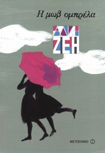
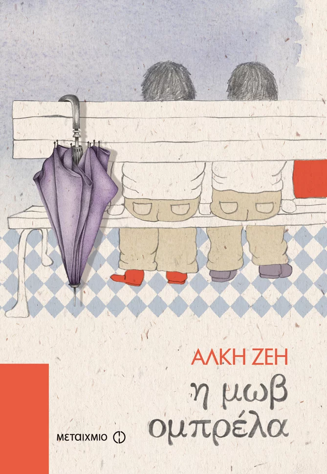
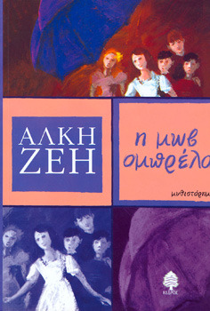
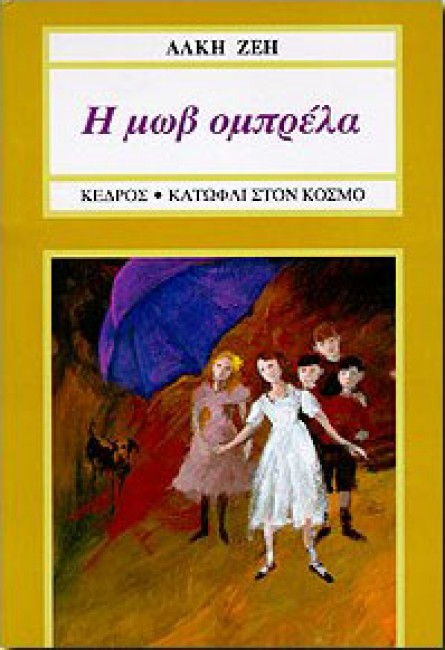

Λίγο πριν από τον πόλεμο του 1940, κάπου στο Μαρούσι, ζει με τους γονείς της η Ελευθερία, ένα δεκάχρονο κορίτσι, που τα δίδυμα μικρότερα αδέρφια της φωνάζουν Λέτρω και όταν θυμώνουν μαζί της πλασμώδιο του Λαβεράν. Απεχθάνεται το νοικοκυριό και τις "γυναικείες" δουλειές, ενώ τρελαίνεται για ό,τι δεν εγκρίνει ο πατέρας της: 8ιαβάζει με μανία βιβλία, ανυπομονεί να δει θέατρο, ρίχνει κλεφτές ματιές στην εφημερίδα, εύχεται κάποτε να μοιάσει στην Αντιγόνη του Σοφοκλή. Στο πάνω πάτωμα του σπιτιού τους ο κύριος Μαρσέλ, ένας Γάλλος που ζει μόνιμα στην Ελλάδα, έχει υπό την προστασία του τον ανιψιό του Μπενουά ο οποίος γίνεται αχώριστος φίλος των παιδιών. Λιγοστά τα παιχνίδια τους -βόλοι, σβούρες, σκοινάκι, γιογιό κι ένα ζευγάρι πατίνια με καρουλάκια-, αλλά αστείρευτη η φαντασία τους. Όλοι μαζί σκαρφίζονται χίλιες δυο ιστορίες που μαγεύουν και τους ίδιους. Και πόσα ακόμα θα σκέφτονταν να κάνουν εάν δεν τους εμπόδιζαν οι μεγάλοι... Οι μεγάλοι και τα παιδιά. Δυο κόσμοι τόσο διαφορετικοί που όσα χρόνια κι αν περάσουν οι νόμοι τους και η γλώσσα τους δεν θα είναι ποτέ κοινά. Ο καθένας κουβαλάει τη δική του αλήθεια. Γι' αυτό άλλωστε και πίσω από μια μωβ ομπρέλα μπορεί να κρύβονται πολλές!
|  |  |  |  |
Βρείτε περισσότερες πληροφορίες σχετικά με το βιβλίο: Η Μωβ Ομπρέλα.